Преимущества Prime
Prime — это правильный и первый выбор вашего питомца. В формулах Prime есть все необходимые ингредиенты для здорового и полноценного развития котят и щенков, сбалансированный состав для кошек и собак. Даже самый привередливый любимец не останется равнодушным!
В ассортименте Prime широкий выбор полнорационных сухих и влажных кормов.
-
Свежее мясо Высокое содержание мясных ингредиентов в формулах Prime.
-
Овощи и травы Источник натуральной клетчатки необходимые в рационе питомцев.
-
Омега-3 и Омега-6 Жирные кислоты помогают сохранить здоровье и блеск шерсти.
-
Пребиотики Улучшают процессы пищеварения и усвоения питательных веществ.
-
Хондроитин и глюкозамин Необходимы для поддержания здоровья суставов.
Линейка кормов Prime


Prime — правильный выбор для вашего питомца
В состав Prime входят только самые лучшие ингредиенты, не содержащие искусственных ароматизаторов, красителей или консервантов.
О бренде